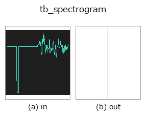

typed op• 数据种类:signal → image
• 调用:fullseye.apply(img, "tb_spectrogram", a=0.5, b=0.5)(2-D 的模型是一张图 + 两个标量旋钮 a,b∈[0,1])

*图为在 128×128 合成输入上实际运行的输出。左为输入，右为输出。点云以俯视散点显示(亮度 = z)，一维序列为折线，体数据为沿 z 的最大值投影，视频为中间帧，复数图像为幅值；无法成像的返回值直接显示数值。*
*旋钮 a 不改变输出(实测: 0.1 / 0.5 / 0.9 相同)。*
扫描旋钮 b(0.1 / 0.5 / 0.9，另一旋钮取默认):
▸ tb_spectrogram: knob b sweep (docs site)
阶段(前置算子 → 本算子，从左到右):
▸ tb_spectrogram: stages (docs site)
换别的图像(合成场景 / 照片 / 硬币。上排为输入，下排为对应输出。旋钮取默认):
▸ tb_spectrogram: other inputs (docs site)
STFT 幅度谱图 -> `(freqs, times, S),其中 S 的形状为 (n_freqs, n_frames)。使用汉宁窗(Hann window);*hop* 默认值为 win//2`。
> 以下的详细说明为原文 —— 摘要与标题已翻译。
**Same raw convention as :func:spectrum, but a different divisor.** Each
column is the unnormalised `|rfft(frame * hann(win))|`, so it is not an
amplitude either — and dividing by `2/win` is *wrong* here, because the
Hann window has already thrown away part of the signal. The correct one-sided
amplitude conversion divides by the window's coherent gain::
w = np.hanning(win)
amp = S * (2.0 / w.sum()) # bins 1 .. win/2-1; DC / Nyquist: 1/w.sum()
Measured on a unit sine at a bin centre (`rate = 16000` Hz, 1000 Hz,
amplitude exactly 1.0, `win = 256`): the raw column peak is
`63.7497786196906; * 2/win gives 0.49804514546633283` (too small by
exactly the Hann coherent gain `sum(w)/win = 0.498046875`), while
`* 2/sum(w) gives 0.9999965273676957`. Only the second one is the
amplitude that was actually in the signal.
Peak *positions*, frame-to-frame ratios and any dB *difference* are unaffected
by either factor. This function returns magnitudes only — the phase is
discarded, so it cannot be inverted; use `acoustics.stft / acoustics.istft`
for a round-trip.
Typed bridge of the 1d op `spectrogram into the 2-D evolution registry: the same implementation, called under the op(v, a, b) convention. a drives rate (default 1) and b drives win` (default 256).
• 示例数据目录(下载 URL / 许可证) —— 2-D 用 skimage.data(BSD/公有领域)加合成图,3-D 给出真实数据源(Stanford/PDS 等)的下载 URL。
• 算子来历与参考文献 —— 该算子族所依据的研究/方法出处。
下面的程序已确认可以运行(与图相同的输入)。在 Studio 帮助中，此块会变成按钮，可当场加载并运行。
img_to_signal 0.50 0.50 tb_spectrogram 0.50 0.50
▸ Load this pipeline · Load & run
下面的示例调用的是底层账本算子 spectrogram。此桥接算子只是把同一实现适配为 fn(v, a, b) 约定，行为完全相同(只是调用形式不同)。
• acoustic_condition_monitoring — py -3.11 examples/acoustic_condition_monitoring.py
image 作为输入)identity · gaussian · mean_box · bilateral · unsharp · median · min_filter · max_filter
typed)tb_points_to_voxel · tb_estimate_point_normals · tb_iss_keypoints · tb_project_points · tb_render_point_depth · tb_statistical_outlier_removal · tb_radius_outlier_removal · tb_voxel_grid_downsample
*Provenance: ops.py — 2D 算子登记表。本条目由 tools/opdocs.py md 自动生成(请勿手工编辑)。*
© 2026 Kazufumi Furuse — Fullseye operator documentation. Licensed under Apache-2.0.
{kind=link}
{kind=link}
{kind=link}